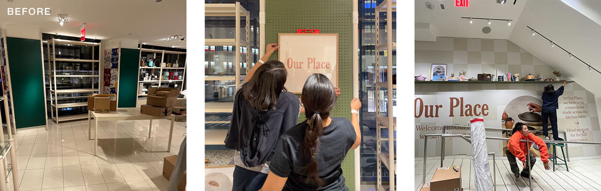
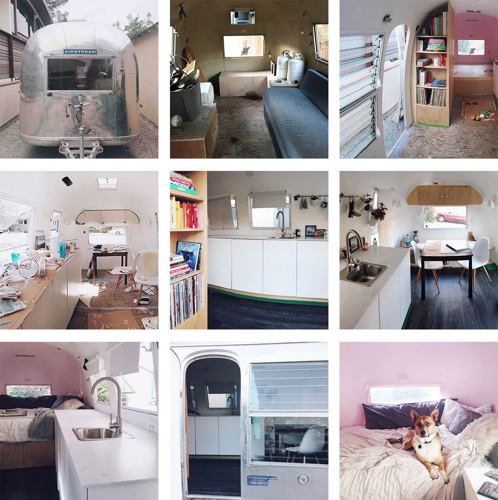

Our Place Nordstrom pop up — This project was the first ever consumer-facing experience for the brand and I was given full creative control to develop the look and feel across all touchpoints. I designed the wall graphics, sourced printers and oversaw the installation, handled the buying/fulfillment for all of the props and product, then carried out the stying and merchandising of the physical space during the install.
The pop up spanned two floors of the Flagship New York location, taking over multiple spaces in the store. It was initially supposed to be live for two months, but was extended through the end of the year at no additional cost to the brand, totaling over eight months of retail exposure.

Renovation of a 1964 Airstream Safari — The interior was completely gutted, then re-built from scratch. It features custom cabinetry and finishes throughout. Photos shown above are from before, during and after.